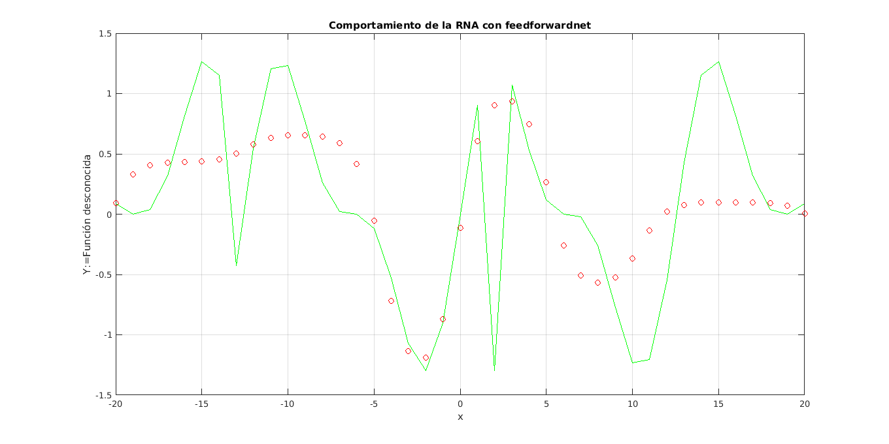
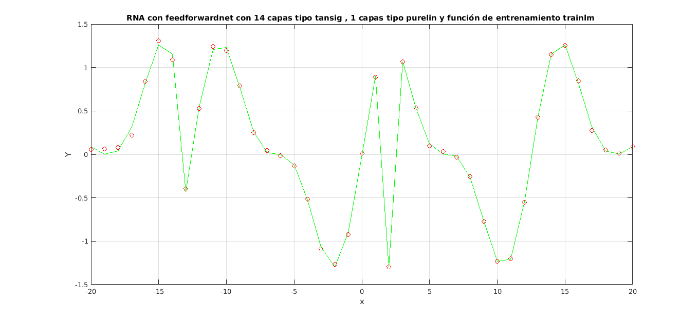

GRAFICA DE LA FUNCIÓN DESCONOCIDA MEDIANTE UNA RNA
Utilizar los comandos de MATLAB para realizar el entrenamiento y la posterior validación de la RNA que genere la respuesta de una función desconocida, mediante MATLAB
Contents
Función feedforwardnet
Las redes feedforward consisten en una serie de capas. La primera capa tiene una conexión desde la entrada de red. Cada capa posterior tiene una conexión de la capa anterior. La capa final produce la salida de la red.
Las redes Feedforward se pueden utilizar para cualquier tipo de mapeo de entrada a salida. Una red feedforward con una capa oculta y suficientes neuronas en las capas ocultas, puede adaptarse a cualquier problema de mapeo de entrada-salida finito.
Las versiones especializadas de la red feedforward incluyen redes de ajuste (fitnet) y reconocimiento de patrones (patternnet). Una variación en la red de feedforward es la red en cascada (cascadeforwardnet) que tiene conexiones adicionales desde la entrada a cada capa, y de cada capa a todas las capas siguientes.
Problema
Encontrar una red neural que permita la solución de tener las siguientes entradas y salidas
entradas =-20:1:20; sal1=[0.0875,0.0002,0.0366,0.3178 0.8151 1.2631 1.1523 -0.4252 0.5477 1.2055 1.2309 0.7715 0.2621 0.0223 -0.0014 -0.1190 -0.5309 -1.0681 -1.2961 -0.9002]; sal2=[0 0.9002 -1.2961 1.0681 0.5309 0.1190 0.0014 -0.0223 -0.2621 -0.7715 -1.2309 -1.2055 -0.5477 0.4252 1.1523 1.2631 0.8151 0.3178 0.0366 0.0002 0.0875]; salidas = [ sal1 sal2 ];
Solucion
La forma básica de definición y entrenamiento de la red es:
desc = feedforwardnet; [desc,tr] = train(desc,entradas,salidas); Y = sim(desc,entradas);
donde feedforward toma como parámetros el número de capas ocultas que por defecto son 10 y el número la función de entrenamiento, la que por defecto es trainlm
Se grafican la salida deseada con la obtenida por defecto
figure('units','normalized','outerposition',[0 0 1 1]) plot(entradas,salidas,'g');grid on;hold on; plot(entradas,Y,'ro'); title(['Comportamiento de la RNA con feedforwardnet']) xlabel('x');ylabel('Y:=Función desconocida')
Sin embargo, como se puede apreciar, la red no produce los resultados esperados. Para poder lograrlos, es posible sintonizar la red mediante funciones y otros parámetros.
La red acepta varias funciones de entrenamiento a saber.
FunTra=char('trainlm','trainbfg','trainrp','traingda');
Trainlm
Trainlm es una función de entrenamiento en red que actualiza los valores de peso y sesgo según la optimización de Levenberg-Marquadt. Es a menudo el algoritmo backpropagation más rápido, y es altamente recomendable como un algoritmo supervisado de primera elección, aunque requiere más memoria que otros algoritmos.
Trainlm admite la formación con vectores de validación y prueba si la propiedad NET.divideFcn de la red se establece en una función de división de datos. Los vectores de validación se usan para detener el entrenamiento temprano si el rendimiento de la red en los vectores de validación no mejora o sigue siendo el mismo para las épocas max_fail en una fila. Los vectores de prueba se utilizan como una comprobación adicional de que la red está generalizando bien, pero no tienen ningún efecto en el entrenamiento
Trainlm puede entrenar cualquier red siempre y cuando su peso, su entrada neta y sus funciones de transferencia tengan funciones derivadas.
Backpropagation se utiliza para calcular la JX de rendimiento Jacobiano con respecto a las variables de peso y sesgo X. Cada variable se ajusta de acuerdo con Levenberg-Marquardt,
Jj = jX * jX Je = jX * E DX = - (jj + I * mu) \ je
Donde E es todo error e I es la matriz de identidad.
El valor de adaptación mu se incrementa en mu_inc hasta que el cambio anterior da como resultado un valor de rendimiento reducido. El cambio entonces se hace a la red y mu se disminuye por mu_dec.
El entrenamiento se detiene cuando ocurre cualquiera de estas condiciones:
- Se alcanza el número máximo de épocas (repeticiones).
- Se excede la cantidad máxima de tiempo.
- El rendimiento se reduce al mínimo a la meta.
- El gradiente de rendimiento cae por debajo de min_grad.
- Mu supera mu_max.
- El rendimiento de validación ha aumentado más de max_fail veces desde la última vez que disminuyó (al usar la validación).
Pruebas
El siguiente algoritmo establece diferentes combinaciones para lograr la mejor solución. Se deja al lector la ejecución para encontrar la red. La gráfica de salida de la red es:

return NumIter=1000; ParObj=0.001; ParObjini=0.001; MSEobj=0.05; NumLy1=round(size(entradas,2)/3); NumLy2=1; NeuMod=char('tansig','purelin','logsig'); i=1;%Contador general j=1;%Contador de respuestas ecm=zeros(); minEcm=0.25; tic for ft=1:size(FunTra,1) for nl2=1:NumLy2 for nl1=1+nl2:NumLy1 for nml1=1:size(NeuMod,1) for nml2=1:size(NeuMod,1) for ni=NumIter:NumIter for po=ParObjini:0.0001:ParObj %desc = myFF(minmax(entradas),[nl1 nl2],{strtrim(NeuMod(nml1,:)) strtrim(NeuMod(nml2,:))},strtrim(FunTra(ft,:))); descNet=myFF(minmax(entradas),nl1,nl2,strtrim(NeuMod(nml1,:)),strtrim(NeuMod(nml2,:)),strtrim(FunTra(ft,:))); descNet.trainParam.epochs = ni; descNet.trainParam.goal = po; descNet.trainParam.showWindow=0; [descOut,tr] = train(descNet,entradas,salidas); Y = sim(descOut,entradas); l=size(Y,2); d=0; for j=1:l d=d+(Y(j)-salidas(j))^2; end ecm(i)=d/l; if ecm(i)<minEcm minEcm=ecm(i); figure('units','normalized','outerposition',[0 0 1 1]) plot(entradas,salidas,'g'); grid on;hold on; plot(entradas,Y,'ro'); title(['RNA con feedforwardnet con ',num2str(nl1),' capas tipo ', NeuMod(nml1,:),', ',num2str(nl2),' capas tipo ',NeuMod(nml2,:),' y función de entrenamiento ',FunTra(ft,:)]); xlabel('x');ylabel('Y'); j=j+1; end i=i+1; end end end end end end end toc
Conclusiones
- Se hicieron variaciones con las entradas para determinar cual da el mejor entrenamiento. Entre más pasos tengan las entradas y las salidas, una mejor correspondencia se tiene de la red.
- Con los valores iniciales de entrada y salida, no se puede concluir con cuantas capas la red es óptima. Si se introducen más pasos, a partir de 2 capas la red tiene buenos resultados
- Es necesario evaluar más funciones de transferencia, número de iteraciones, funciones de entrenamiento, entre otros parámetros